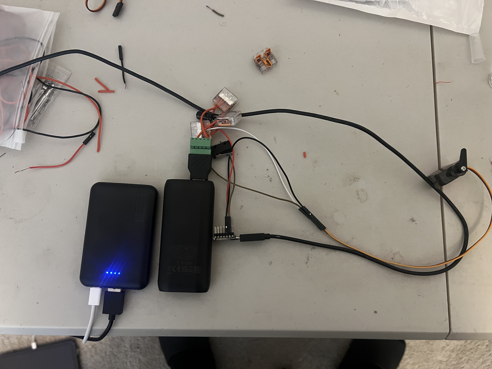
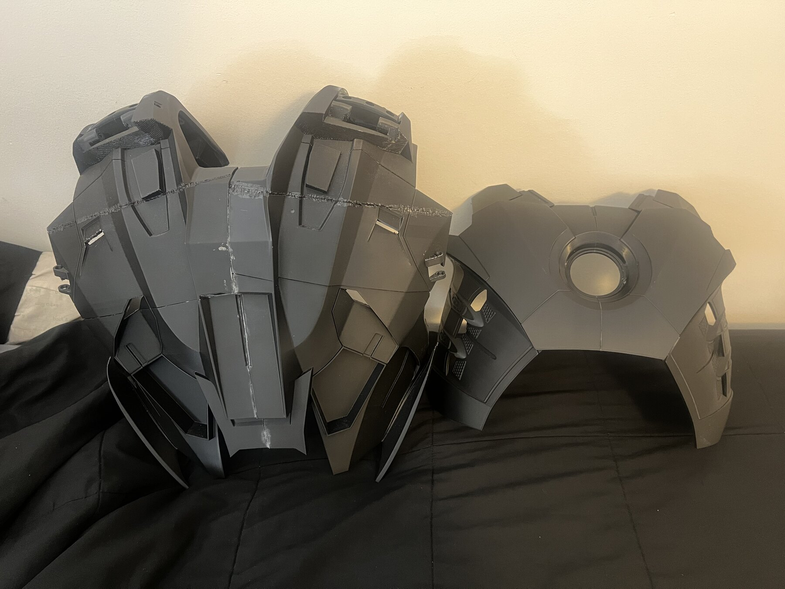
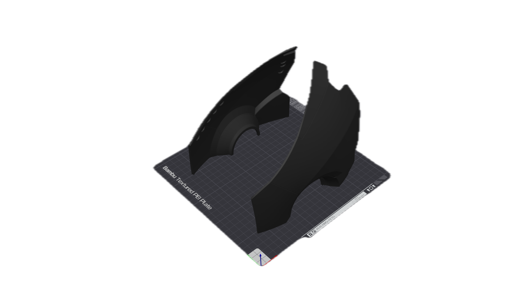
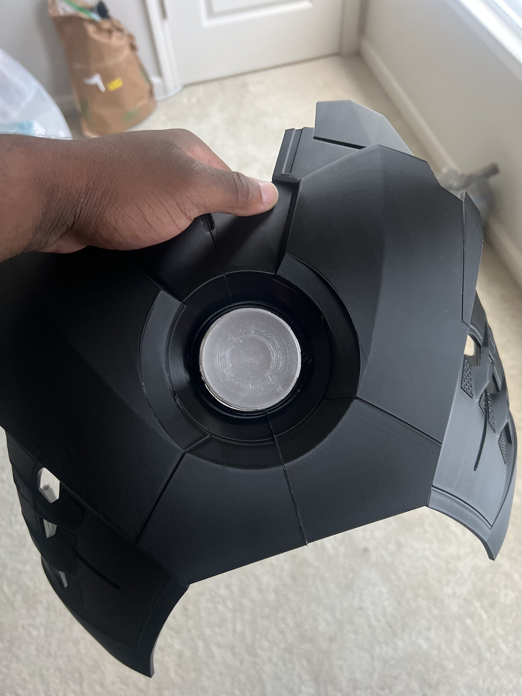

Personal R&D · Engineering Lab
Built because I wanted to know if I could.
My personal projects are where I deliberately step outside what I already know. I use them to attack my weaknesses head on and teach myself new disciplines, turn curiosity into prototypes, and connect mechanical design, electronics, software, fabrication, and art. Welcome to my engineering lab!
The mindset
Start with creative intent. Engineer toward the experience.
My primary interests lie in the experience of a system's interaction with its individual components. I start with what the experience should feel like, then learning and combining the systems required to make it real. As I've learned, this takes time, iteration, and a willingness to fail. The goal is not to rush and finish the project, but to learn from the process. These projects displayed are intentionally shown in motion, not only after they're finished.
01Creative IntentWhat should this feel like?
→
02LearnWhat do I need to know?
→
03PrototypeMake the idea physical.
→
04IntegrateMake the systems work together.
→
05ExperienceDoes it create the intended effect?
Development Language
Where Are We?
My personal work is rarely a binary status of unfinished or finished. I track my projects by the kind of engineering question I'm looking to answer.
01Discovery
Define the intent, research the system, identify what I need to learn.
02Proof of Concept
Prove the core idea can work before optimizing it.
03System Development
Build the mechanical, electronic, software, or fabrication subsystems.
04Integration
Connect subsystems and solve the problems that appear between them.
05Refinement
Improve reliability, packaging, usability, fidelity, and finish.
Embedded Systems · Mechanical Design · Wearable Technology
Wearable Web-Shooter
Discovery
Proof of Concept
System Development
Integration
Refinement
Why I started
I wanted a project that would force me to stop treating electronics as a black box. I had never soldered before, so this project was a great way to learn the fundamentals. The web-shooter became my first electronics project at this scale: a wearable device where firmware, wiring, power, actuation, mechanical packaging, and user input all have to work together.
What I'm teaching myself
- Embedded control with ESP32-class hardware
- Power distribution, grounding, connectors, and reliable wiring
- Servo and actuator selection based on real mechanical loads
- Designing mechanisms around packaging and wearable constraints
- Breaking a complex system into testable subsystems
Where I want it to go
The long-term goal is a purpose-built wearable system with a custom PCB, cleaner power architecture, compact wiring, stronger mechanical actuation, and packaging designed as one integrated product rather than a collection of development boards and test hardware.

Wearable Systems · Digital Fabrication · Mechatronics
Iron Man Mark 7
Discovery
Proof of Concept
System Development
Integration
Refinement
Why I started
The scale of the project is the point. A full wearable suit forces me to think beyond a single mechanism: fit, mobility, fabrication, surface finish, attachment, weight, electronics, actuation, maintenance, and visual fidelity all compete for the same space.
What I'm exploring
- Turning digital armor geometry into manufacturable, wearable components
- 3D-print segmentation, orientation, assembly, and finishing
- Human factors: body fitment, clearances, mobility, and articulation
- Designing internal space for future lighting, wiring, and motion systems
- How visual design and mechanical function can support the same creative intent
Where I want it to go
My end goal is not simply a finished costume. I want to evolve it into a wearable mechatronic character system. One where motion, lighting, sound, controls, and physical presence reinforce the illusion of a functional powered suit.



Immersive Systems · Human-Machine Interaction · Simulation
Sim Racing Environment
Discovery
Proof of Concept
System Development
Integration
Refinement
The Engineering Question
How can a stationary simulator communicate the behavior of a moving vehicle to the driver?
I'm interested in how visual, steering, tactile, and eventually telemetry-driven feedback can work together to create a more convincing connection between simulated vehicle behavior and human perception.
Human-Machine Interaction
Designing feedback around human perception.
A fixed-base simulator cannot reproduce every single physical cue of a moving vehicle. The experience instead depends on how effectively available feedback channels communicate what the simulated vehicle is doing.
Vehicle Dynamics Connection
From simulated tire behavior to something the driver can feel.
Steering feedback provides one physical connection between vehicle dynamics and the driver. The goal is not simply stronger force, but useful feedback that communicates changes in the simulated vehicle. I used my simulator to connect to the physics introduced in my Vehicle Dynamics courses and understand how they can be felt through the steering wheel.
01
Tire Forces
Grip · Slip · Lateral response
02
Vehicle Dynamics
Yaw · Load transfer · Response
03
Steering Feedback
Torque · Resistance · Vibration
04
Driver
Perception + Correction
Steering · Throttle · Braking
Driver Input → Vehicle Response
Research Connection
Force feedback can affect both performance and experience.
Murphy, Toth, Hojaji & Campbell — Computers in Human Behavior Reports, 2026.
Read the study ↗
59
Experienced sim racers studied
FFB
Moderate force feedback produced faster laps than
high-intensity or no force feedback.
Haptics
Vibrotactile feedback did not improve performance,
but increased driver preference for the experience.
Why it belongs here
I think of the simulator as an immersive system rather than a collection of gaming hardware. The experience depends on how visual information, force feedback, ergonomics, control inputs, audio, and vehicle behavior combine to convince the driver of something that is not physically happening.
What it lets me study
- Human-machine interaction and control feel
- Force-feedback tuning and perceived vehicle behavior
- Ergonomic geometry: sight lines, reach, seating, and controls
- The relationship between technical fidelity and perceived immersion
- How multiple sensory systems combine into one coherent experience
- Connect Vehicle Dynamics courses actively through hands-on experiences and tuning
Technical Sketchbook
CAD, prototypes, analysis, fabrication, and smaller experiments.
Not everything needs to become a full project. This space collects smaller pieces of engineering work, design exploration, fabrication, and technical experiments.
Connecting the Dots
The goal is to have technical range with a reason.
Mechanical design, embedded electronics, CAD, fabrication, software, visual development, and immersive systems are not separate interests to me. I am learning them because the more of the system I understand, the more completely I can translate creative intent into a working experience. I love engineering for the simple reason that it is the process of turning an idea into a physical reality. The more I can learn, the more I can make.
Back to Selected Work